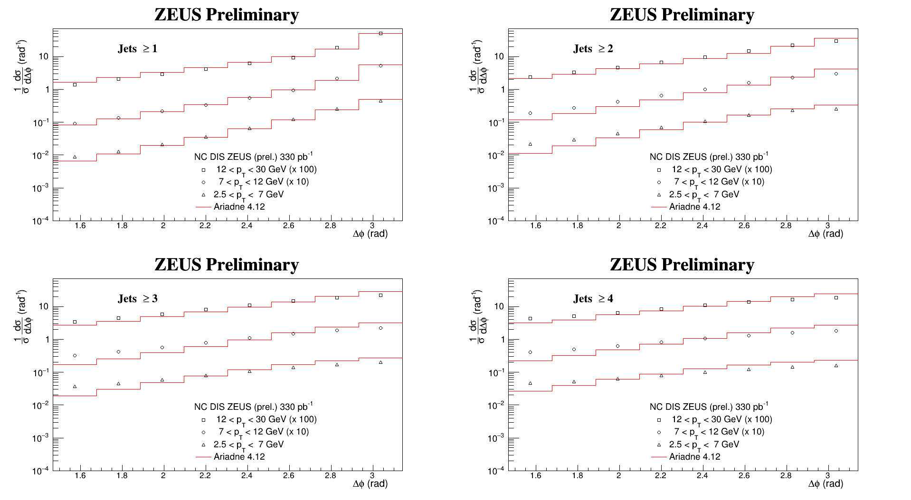

Measurement of the azimuthal decorrelation angle
between the leading jet and scattered lepton
in deep inelastic scattering at HERA

Uncertainties
For migration, covariance and correlation matrices for differet regions see:
integrated
2.5 < p
T
< 7 GeV
7 < p
T
< 12 GeV
12 < p
T
< 30 GeV